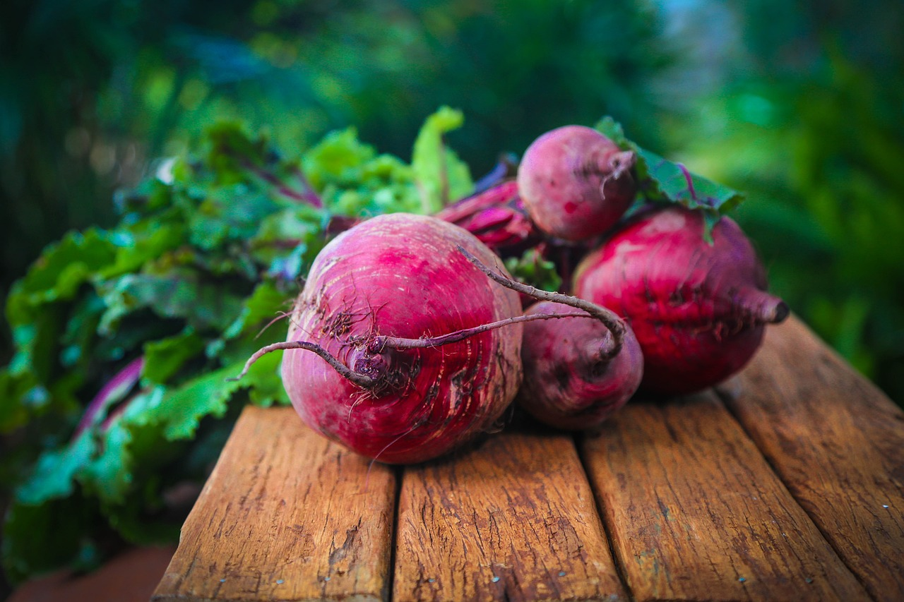
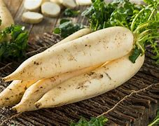

BEETROOT
Organically grown beetroot

CARROTS
Fresh and organic carrots

RADISH
mild and slightly sweet radish
Fresh organic produce and home delivered
Organically grown beetroot
Fresh and organic carrots
mild and slightly sweet radish
sweet and yellow pineapple
Fresh and sweet Nectarines
Healthy and red Strawberries
Welcome to the Fruts and Vegetables Market! We are passionate about providing fresh, organic produce directly to your doorstep. Our mission is to deliver high-quality fruits and vegetables while supporting sustainable and healthy living.
At our market, we prioritize the well-being of our customers by offering a variety of organically grown products. From crisp and sweet fruits to vibrant and nutritious vegetables, our selection is carefully curated to meet your health and taste preferences.
Our team is dedicated to ensuring that you receive the finest produce, and we take pride in our commitment to customer satisfaction. Feel free to explore our website and discover the delicious and wholesome offerings we have in store for you.